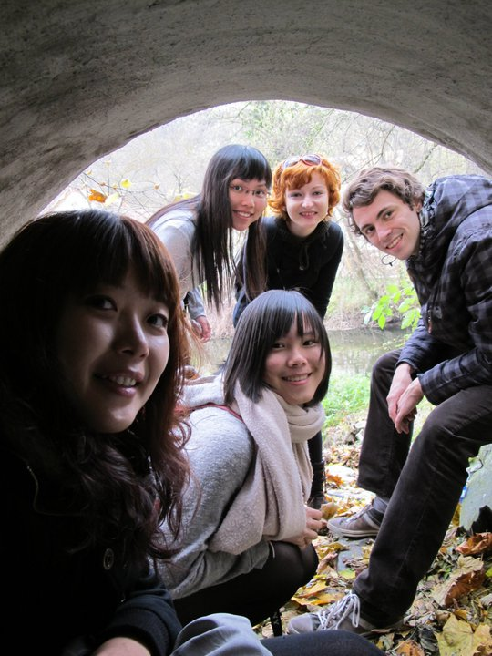
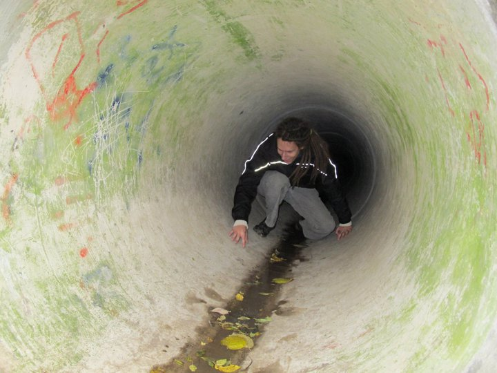
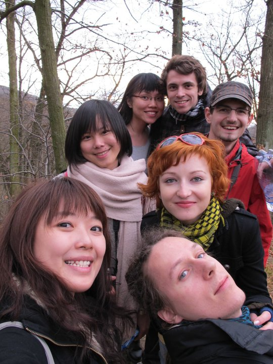
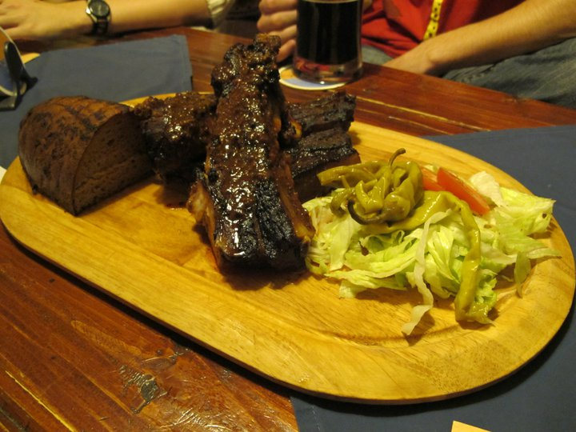

Už dlouho se tu na blogu neobjevil žádný příspěvek do rubriky “Toulky”, přitom se teď toulám víc než dost, jen to nějak nestíhám zaznamenávat :-)…Krom toho se také poslední dobou snažím oprašovat znalosti angličtiny utužováním přátelství s několika studenty, kteří byli natolik odvážní, že vyrazili do České republiky na Erasmus :-). Po několika vařících sessions, kde jsme se lépe poznali, jsme se s Péťou rozhodli uspořádat pro ně víkendový výlet, abychom jim ukázali i méně známá brněnská zákoutí. Organizací jsem byla tentokrát pověřena já, a tak jsem si dala záležet, abych se blýskla :D !

Pátrání po kešce…vypadáme jak Správná pětka, co :D
Nakonec jsem zvolila poměrně nenáročnou výpravu na zříceninu Obřanského hradu a Hádeckou planinku, Péťa naplánoval kešky a mohlo se vyrazit. Jednoho sobotního dopoledne jsme se tedy všichni šťastně potkali u hlaváku a vydali se vstříc dobrodružství :-). Výletu se krom nás dvou účastnili také Žánek, Péťa Krásný a naše erasmácké kamarádky Phyllis, Julia a Mandy. Ty jsme během čekání na Péťu naučily česky pozdrav “AHOJ KRÁSNY KLUK”, takže hned z kraje bylo o zábavu postaráno :D…
Nejprve jsme se museli přemístit šalinou až do Obřan na konečnou. Tam jsme si ještě v civilizaci odlovili jednu kešku u jakési bývalé fabriky a pak se vydali po břehu Svitavy vzhůru do přírody. První naší zajímavější zastávkou byla keška skrytá v…no, nemůžu samozřejmě prozrazovat, kde byla skrytá, ale fotky asi hovoří za vše :D…

Úspěšný lovec :)
Na takovéto tajuplné místo se odvážili skutečně jen ti nejsilnější lovci - Žánek s Péťou. My ostatní jsme na ně čekali venku, kde jsme se úspěšně zabavili pořizováním fotek (viz.výše) a vtipkováním na téma, jestli kluky ještě někdy uvidíme :-). Naštěstí všechno dobře dopadlo, kluci vylezli živí a zdraví, takže jsme Péťovi vytřepali imaginární brouky z dredů a mohlo se pokračovat dál. Následující keška nás zavedla k železniční trati. Dala nám docela zabrat, Julia se však ukázala jako přirozený talent na geocaching a nakonec ji objevila! Poté jsme se vydrápali na kopec nad tratí, kde jsme si vychutnali nádherný výhled a mohli se podívat, co nás ještě čeká. Malebné panorama Péťu inspiroval k recitaci připravené básně od S.K. Neumanna, kterému tato místa také kdysi sloužila jako studna inspirace při jeho tvorbě…

Po této poetické vložce jsme se vrátili dolů na asfaltku a pokračovali po ní, až dokud nás nedovedla na rozcestí. Před náročným výstupem k hradu jsme se rozhodli na chvíli usadit a posilnit se svačinkami a záhy jsme se vydali po modré strmou cestou vzhůru ke zřícenině Obřanského hradu. Z hradu toho moc nezbylo, stejně tak v historických pramenech údajně nejsou k nalezení významější informace, nicméně o tomto místě hodně napověděl archeologický průzkum. Hrad vznikl někdy okolo roku 1278, s tím že za jeho zakladatele je považován Gerhard z Obřan, který z hradu podnikal loupeživé útoky.

Společné foto na zřícenině Obřanského hradu
Hromady napadaného javorového listí jsme využili k podzimním radovánkám a poté, co jsme se dostatečně vyřádili tím, že jsme po sobě listí házeli případně se do něj navzájem zahrabávali :D, vydali jsme se odlovit další keš. Opět ji vypátrala úspěšná Julia. Mezitím jsme ale poněkud zapomněli na čas, a protože jsme byli sotva v polovině cesty, rozhodli jsme se zrychlit tempo, aby nás nezastihla v lese tma. Cesta od hradu nás dovedla až k vyhlídce Šumbera, která je součástí přírodní rezervace Hádecká planinka. Právě na této vyhlídce před časem sedával S.K. Neumann, který obdivoval zdejší výhled. Vápencový sráz, v nadmořské výšce 435 m.n.m. skýtal krásný výhled na údolí Svitavy a na obrysy Chřibů a Bílých Karpat. Dnes již stromy výhled zaclonily. Na místě alespoň stojí památník slavného básníka na němž stojí úryvek z jeho Knihy lesů, vod a strání, který nám Péťa ten den recitoval:
Na skalkách dnes vítr poskakoval
po bělošedivých balvanech
jarního rusáka březen koval
na Šumbeře nebo na Hádech…

To už jsme se ale pomalu blížili ke zlatému hřebu našeho výletu. Doufala jsem, že se nám podaří k němu dorazit ještě před západem slunce, protože Hády skýtají vůbec ten nejkrásnější pohled na Brno, jaký znám. Před pátou hodinou jsme míjeli vysílač a to už bylo jisté, že si nádherný výhled užijeme v romantických kulisách zapadajícího slunce. Holky byly nadšené a já znovu s nima. Dívat se na podvečerní Brno z výšky je nepopsatelné…

No a zazvonil nám zvonec…:-) Při zpáteční cestě kolem hospody nás napadlo, že si za takovou túru zasloužíme nějakou odměnu, a tak jsme se rozhodli, že se stavíme na jedno. Na naši exotickou výpravu však místní štamgasti koukali nějak podivně, takže skutečně u jednoho i zůstalo…Ukázalo se však, že žízeň je převlečený hlad :D a když nás Žánek nalákal na akční žebra v hospodě u Svoboďáku, neváhali jsme ani minutu. Abychom si cestu zpříjemnili, naučili jsme holky užitečnou frázi “NAŽEREM SE” :D a pak už se nám jen sbíhaly sliny. Aby se sbíhaly i vám, neodpustím si dokumentární foto :D…

“Nažerem se :D !”
Výlet se skutečně vydařil do posledního puntíka a tato skvostná tečka na závěr je toho myslím jasným důkazem :-). O týden později jsme se rozhodli pro velký úspěch uspořádat pro erasmáky další zajímavý výlet, o tom ale zase někdy příště :-)…
Komentáře (1)
Komentáře jsou uzavřené.